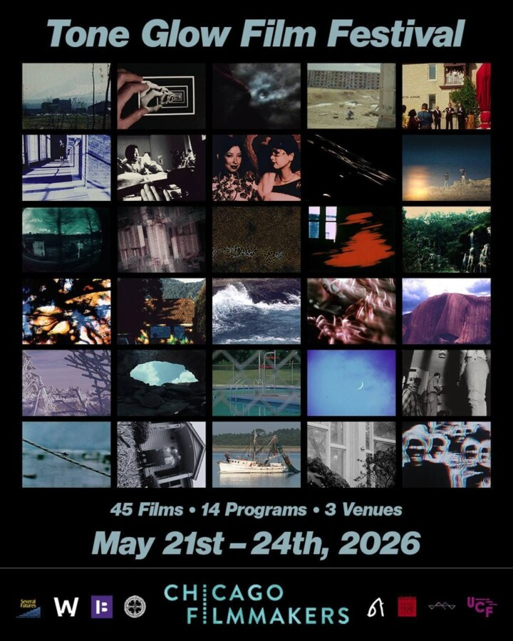

Tone Glow Film Festival
Tone Glow Film Festival (TGFF) is a festival committed to showcasing the best in experimental film. The screenings will take place on Thursday, May 21st to Sunday, May 24th at three venues in Chicagoland. 45 films will be shown across 14 programs, and 26 of these films will be shown on 16mm prints, some of which were imported from overseas and have never been shown in North America. Eschewing traditional submission-based programming, TGFF hand-selects works that highlight the ingenuity, originality, and radical possibilities of independent and avant-garde filmmaking. Its mission is to provide local audiences with the chance to see masterworks both new and old, inviting contemplation on the cinematic form’s history and future. TGFF is co-presented by Chicago Filmmakers.